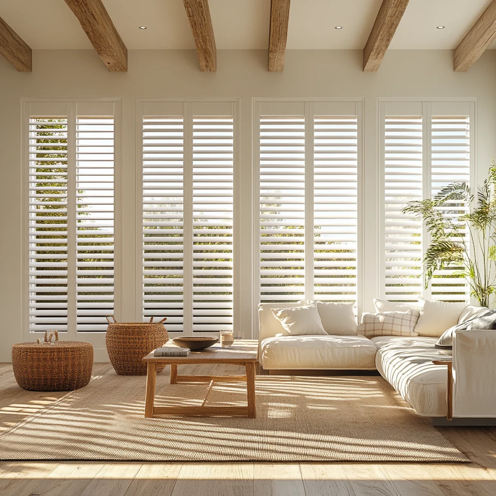
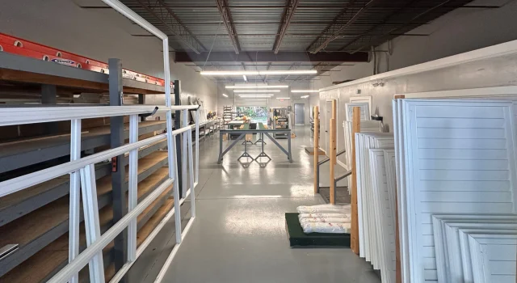

LARGO MADE. TAMPA BAY LOVED.
Plantation
shutters.
Made for you.
Custom plantation shutters for Tampa Bay.
Manufactured right here in Largo, Florida.
Serving Pinellas & Hillsborough counties
FROM OUR CUSTOMERS
Good neighbors. Great windows.
A LITTLE LIGHT. A BIG DIFFERENCE.
Made for your windows.
Made in your neighborhood.
Morning sunshine. Afternoon privacy. A room that finally feels like you. Custom plantation shutters let you make the most of the light you live in.
At 5 Day Plantation Shutters, we manufacture shutters in Largo and help homeowners across Tampa Bay find the right fit for their home.
Explore plantation shutters
FROM OUR WORKSHOP TO YOUR WINDOWS.MEET YOUR LOCAL SHUTTER MAKER
Real people.
Real craftsmanship.
Right here.
Our home base is Largo, Florida. Yours might be in Clearwater, St. Petersburg, Tampa, or just down the road. Local manufacturing is at the heart of what we do.
GET TO KNOW 5 DAYYOUR WINDOWS. YOUR WAY.
Find your kind of light.
Start with shutters, or explore another way
to make your space feel like home.
Plantation
shutters
Locally manufactured. Custom fitted. Control light and privacy with adjustable louvers.
EXPLORE SHUTTERS 02 / SIMPLE & VERSATILERoller
shades
A clean look with fabric choices for light filtering, room darkening, and privacy.
EXPLORE SHADES 03 / EVERYDAY LIGHT CONTROLHorizontal
blinds
Adjust the view, soften sunlight, and find a finish that works with your room.
EXPLORE BLINDSAT HOME AROUND THE BAY
Largo roots.
Tampa Bay reach.
We serve homes throughout Pinellas and Hillsborough counties. Tell us where you are and what you have in mind.
BOOK A FREE ESTIMATELET’S CLEAR THINGS UP
A few things
you might be wondering.
Where are your plantation shutters made?
We manufacture plantation shutters in Largo, Florida, and serve homeowners across Pinellas and Hillsborough counties.
Do you offer in-home estimates?
Yes. Contact us to arrange a free in-home estimate and discuss your windows, product preferences, and installation needs.
How soon can my shutters be installed?
Ask us for the current production and installation schedule for your project. Timing depends on your product, measurements, and order details.
Do you also offer shades and blinds?
Yes. We also offer roller shades and horizontal blinds. We can discuss which window treatment suits each room during your consultation.
LET’S MAKE YOUR WINDOWS YOURS.